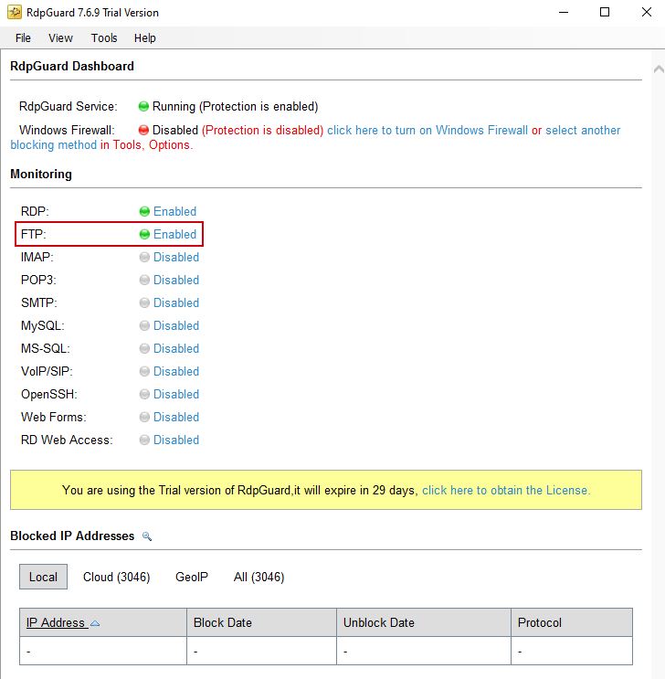
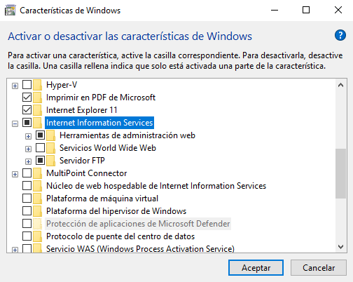

3.2 RdpGuard
1. Introducción
En este capítulo, se describe cómo configurar una herramienta para la prevención de intrusiones en entornos Windows.
En este caso se usaRdpGuardque protege los servidores de ataques de fuerza bruta en distintos protocolos y servicios, para este caso, se verá RDP o FTP.
Esta aplicación supervisa los intentos de acceso para detectar intentos fallidos de inicio de sesión, detectando las direcciones IP atacantes para bloquearlas o crear listas negras.
1.1 Recursos
- Equipo Windows 10 Enterprise conectado en una red pública 192.168.0.0 - Equipo Objetivo.
- Equipo kali Linuxconectado en una red pública 192.168.0.0 - Equipo Atacante.
2. Instalación
Antes de comenzar es necesario tener WinPcapinstalado en el equipo Windows que se quiere asegurar. Para este caso, se instala sobre un Windows 10 Enterprise.
Figura 1. Página oficial para la descarga.
Hay que descargar el fichero ejecutable desde la página oficial y luego, instalar el mismo en el equipo.
Instalación-1
Instalación-2
Instalación-3
Instalación-4
Una vez instaladoWinPcap, hay que acceder a la página oficial de RdpGuard, desde donde se puede descargar la herramienta. Se tendrá un periodo de 29 días de prueba, ya que se trata de una herramienta de pago.
Una vez descargado el instalador, hay que ejecutar el mismoy completar la instalación de la herramienta.
Instalación-1

Instalación-2
Instalación-3
Instalación-4
Instalación-5
3. Puesta en marcha
Tras instalarRdpGuard, se puede ver un menú principal con los servicios habilitados que se están protegiendo.
Figura 2.Panel principal de RdpGuard.
A continuación,hay que desactivar elfirewallen el perfil de red que se esté en ese momento para evitar que bloquee las conexiones al equipo durante la descripción de esta herramienta que se hace a continuación. Como ejemplo, se desactiva para el perfil de red privado y pública. Si el equipo estuviera integrado en un dominio, habría que desactivar el perfil de red de dominio.
Figura 3.Desactivar el firewall para el perfil de red privada y pública.
4. Consultar la información de los equipos que intervienen
A continuación, hay que comprobar la dirección del equipo Windows 10 (objetivo) y de la máquina atacante.
Información de red del equipo objetivo
Figura 4.Consulta de la configuración de red del equipo objetivo.
Información de red del equipo atacante
Figura 5.Consulta de la configuración de red del equipo atacante.
5. Ataque de fuerza bruta
Mediante la herramienta hydrase realiza un ataque de fuerza bruta con el diccionario rockyou.
En primer lugar, hay que descargar el diccionario con wget.
(rootkali)-[~]
# wget https://github.com/brannondorsey/naive-hashcat/releases/download/data/rockyou.txt
Figura 6.Descarga del diccionario rockyou.
Una vez descargado el diccionario, ya se puede realizar el ataque, que consiste en el puerto RDP (escritorio remoto).
Figura 7.Número de Puerto RDP configurado en el equipo objetivo.
(rootkali)-[~]
# hydra -L rockyou.txt -p rockyou.txt rdp://192.168.0.33:3389
Figura 8.Ejecución del comando hydra.
donde los parámetros que se le pueden pasar son:
- -l: Se indica el usaurio del servicio.
- -L: Se puede utilizar una lista de nombres de usuario.
- -p: Se indica que se utilizará una sola palabra como password.
- -P:Se puede utilizar una lista de passwords.
- -v o -V: Verbose-
- -R: Permite restaurar la sesión de la última vez que la herramienta fue utilizada (útil para no perder el estado del ataque).
5.1 Resultado del ataque
Tras realizar el ataque a la máquina objetivo Windows, el RdpGuard detecta los intentos de conexión al protocolo RDP y bloquea la máquina atacante.
Figura 9.Bloqueo del ataque.
6. RdpGuard - FTP
A continuación, se va a comprobar que también bloquea la dirección mediante el protocolo FTP. Para ello, hay que desbloquear la dirección que se ha bloqueado anteriormente, ya que si no, no se podrá comunicar con el equipo.
Figura 10.Desbloqueo del ataque.
A continuación, se habilita la protecciónFTPy se selecciona el método de monitorización deWinPcap, para ello, hay que pulsar sobre 'configurar...' y en la ventana nueva, hay que seleccionar nuestra tarjeta de red.
Figura 11.Habilitación de la protecciónFTPy se selección del método de monitorización deWinPcap.
Una vez realizado esto, hay que guardar y ya se podrá ver como el servicioFTPtiene la protección habilitada.

Figura 12.Protección FTP habilitada.
El siguiente paso esabrir un servidor FTP para tener la conexión disponible en nuestro equipo y poder atacarlo desde la otra máquina.
Si se quiere abrir un servidor FTP en nuestro equipo, lo primero que se tiene que hacer es activar la característica de Windows de IIS y Servidor FTP.

Figura 13.Activarla característica de Windows de IIS y Servidor FTP.
A continuación, desde el panel de control se puede acceder al panel de Administrador de IIS.
Figura 14.Acceso al panelAdministrador de IIS.
Una vez ahí, hay que agregar un nuevo sitioFTP.
Figura 14.Agregar nuevo sitio FTP.
En las siguientes imágenes, se describe la configuración del nuevo sitio FTP a poner en marcha.
Sitio-FTP 1
Sitio-FTP 2
Sitio-FTP 3
Sitio-FTP 4
Mediante la herramientahydrase realiza un ataque de fuerza bruta con el diccionariorockyou.
(rootkali)-[~]
# hydra -l rockyou.txt -p rockyou.txt 192.168.0.33 ftp
Figura 15.Ataque de fuerza bruta ftp.
6.1 Resultado del ataque
Tras realizar el ataque a la máquina objetivo Windows, el RdpGuard detecta los intentos de conexión al protocolo FTP y bloquea la máquina atacante.
Figura 16.Bloqueo del ataque FTP.
Obra publicada con Licencia Creative Commons Reconocimiento No comercial Compartir igual 4.0